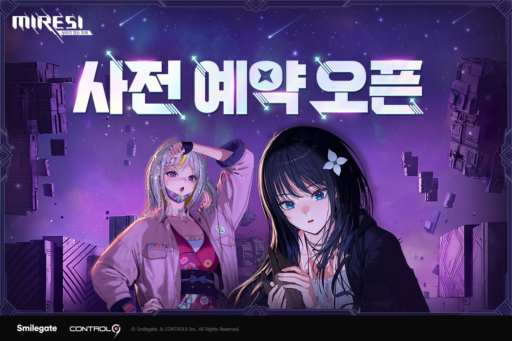
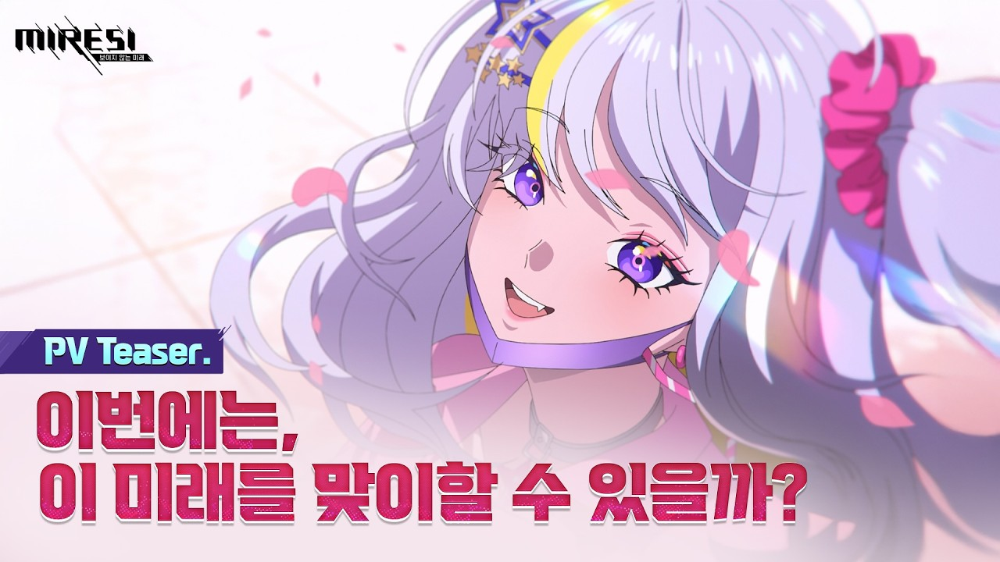

미래시보이지않는미래 사전예약 니케아트디렉터 서브컬처신작 정보정리
서브컬처 쪽 소식 계속 챙겨보시는 분들은 요 며칠 '미래시: 보이지 않는 미래' 이름 한 번쯤 보셨을 것 같은데요. 스마일게이트가 새로 준비 중인 수집형 RPG인데, 지난주부터 사전예약 페이지가 열려서 저도 궁금한 마음에 이것저것 찾아봤습니다. 오늘은 지금까지 공개된 정보만 정리해서 사전예약 뭐부터 하면 되는지, 어떤 게임인지 담백하게 풀어볼게요.

사전예약 오픈을 알리는 공식 키비주얼이에요. 위쪽 캐릭터 둘, 왠지 벌써 궁금해지죠?
이미지: 인벤 · ⓒ Smilegate & CONTROL9 Inc.
미래시가 어떤 게임이냐면요
개발은 컨트롤나인이 맡았고, 서비스는 스마일게이트가 하는 서브컬처 수집형 RPG예요. 컨트롤나인이라는 회사 자체가 낯설 수 있는데, '승리의 여신: 니케'랑 '세븐나이츠2' 핵심 개발진들이 나와서 세운 스튜디오라고 하더라고요. 그래서인지 처음 소식 뜰 때부터 업계에서도 관심 있게 지켜본 편이라고 해요.
세계관이 좀 독특한데, 인류가 시간을 다루는 힘을 얻었지만 정작 멸망을 맞아 미래 자체를 잃어버렸다는 설정이에요. 앞을 내다보는 '미래시' 능력은 있는데 나아갈 미래가 없어진 거죠. 그래서 주인공은 '크로노기어'라는 특별한 시계로 과거로 돌아가서, 뒤틀린 역사를 마주하고 미래를 되찾아가는 이야기를 그린다고 합니다. 이렇게 과거로 돌아간 이들을 '리터너'라고 부르는데, 강한 힘을 얻는 대신 누군가의 기억에서 지워지는 페널티도 있다고 하니 서사 쪽에도 꽤 공을 들인 느낌이에요.
전투는 캐릭터의 위치와 이동을 핵심 전략으로 쓰는 위치 기반 실시간 턴제 방식이라고 해요. 그냥 스킬 쓰고 끝나는 게 아니라 어디 서 있느냐가 승패에 영향을 준다는 거니까, 포지셔닝 좋아하는 분들이라면 눈여겨볼 만하겠더라고요.
전투 중 위치를 옮기는 연출이 나오는데, 실제 플레이 영상으로 봐야 감이 확 오는 부분이에요.
니케 아트디렉터가 참여했다는 게 진짜예요?
네, 이건 확인된 사실이에요. 아트 디렉터는 김형섭(활동명 '혈라') 일러스트레이터인데, '데스티니 차일드'랑 '승리의 여신: 니케'에서 아트 디렉터로 활동했던 분이에요. 니케 특유의 그 감각적인 캐릭터 비주얼 만든 분이 이번 미래시에도 참여한다고 하니, 캐릭터 디자인 기대하는 분들 사이에서는 벌써부터 화제더라고요.
시간여행이라는 큰 틀 안에서 여러 시대와 세계관을 오가는 이야기지만, 화풍만큼은 통일해서 '이건 미래시다' 싶은 아이덴티티를 주려고 했다는 인터뷰도 있었어요. 다만 캐릭터 디자인 자체는 호평이 많은데, 아직 개발 초기 단계다 보니 3D 모델 퀄리티에 대한 얘기가 계속 나오고 있기는 해요. 개발진도 이 부분은 인지하고 있고, 지속적으로 다듬는 중이라고 밝힌 상태입니다.

최근 공개된 신규 PV 티저인데, "이번에는 이 미래를 맞이할 수 있을까?"라는 문구가 계속 마음에 남더라고요.
이미지: 미래시 공식 유튜브
등장인물 살짝 엿보기
대표적으로 언급되는 캐릭터는 엔데, 티에리아, 이츠카 세 명이고, 여기에 레몬·뉴·이브 같은 캐릭터들도 함께 소개되고 있어요. 첫 PV 티저에서는 엔데·이츠카·티에리아가 전투를 펼치는 장면이 나왔고, 이후 공개된 신규 PV는 세계 멸망 순간의 전투 장면과 평화로운 일상 장면이 교차되면서 시간을 거슬러 운명을 바꾼다는 미래시의 핵심 서사를 보여줬다고 해요.
캐릭터별 구체적인 스킬이나 역할까지는 아직 공식적으로 다 안 풀린 것 같아서, 이 부분은 🔍 추가 공개 확인 필요해 보여요. 궁금하신 분들은 공식 채널 소식을 계속 지켜보시는 게 좋을 것 같습니다.
사전예약, 지금 뭘 챙기면 되나요?
사전예약 페이지는 2026년 6월 24일에 오픈했어요. 북미 최대 서브컬처 행사인 애니메 엑스포 참가를 기념해서 함께 열렸다고 하더라고요. 방법은 간단한데, 공식 사전예약 페이지(STOVE 플랫폼 기반)에 접속해서 휴대폰 번호를 등록하면 끝이에요. 만 14세 이상, 개인정보 수집 및 광고성 정보 수신 동의만 체크하면 되고요.
- 사전예약 방법
- 공식 사이트 휴대폰 번호 인증 등록(별도 스토어 사전예약은 확인 안 됨)
- 사전예약 시작
- 2026.06.24
- 사전예약 마감
- 🔍 미공개 공식 공지 없음
- 출시일
- 🔍 미정 세부 일정 추후 순차 공개 예정
- 플랫폼
- PC(STOVE) · 모바일(구글플레이·앱스토어) 크로스플랫폼
- 장르
- 서브컬처 수집형 RPG(언리얼 엔진5)
솔직히 말씀드리면 사전예약 마감일이나 단계별 보상 목록은 이번 페이지엔 아직 없었어요. 공식 문구를 그대로 옮기면 "지금 사전예약하셔도 추후 공개될 모든 사전예약 보상 혜택을 동일하게 받으실 수 있습니다"라고 안내하고 있어서, 지금 당장 안 하셔도 나중에 몰아서 받는 구조인 것 같아요. 그러니 오늘 못 하셨다고 아쉬워하지 않으셔도 될 것 같고, 보상 내용은 공개되는 대로 다시 정리해서 알려드릴게요.
출시일도 아직은 미정이에요. 나무위키나 여러 매체 다 "2026년 출시 예정"이라고는 하는데, 스마일게이트 쪽에서 정식으로 확정 발표한 날짜는 없고 "세부 서비스 일정은 추후 순차적으로 공개하겠다"는 게 공식 입장이라 그대로 전해드립니다.
| 항목 | 내용 |
|---|---|
| 개발 / 서비스 | 컨트롤나인 / 스마일게이트 |
| 장르 | 서브컬처 수집형 RPG |
| 플랫폼 | PC(Windows·STOVE), 모바일(Android·iOS) |
| 전투 시스템 | 위치 기반 실시간 턴제 |
| 아트디렉터 | 김형섭(혈라) — 니케·데스티니 차일드 참여 |
| 사전예약 방법 | 공식 사이트 휴대폰 번호 등록 |
| 사전예약 기간 | 2026.06.24 시작 / 마감 미공개 |
| 출시일 | 미정 |
미래시 정리
니케 아트디렉터가 다시 뭉친 서브컬처 신작이라는 것만으로도 눈길이 가는 게임인데요. 시간여행이라는 서사 축도 흥미롭고, 위치 기반 전투라는 시스템도 여느 수집형 RPG랑은 결이 좀 달라 보여서 저는 개인적으로 기대가 되더라고요. 다만 아직 출시일도 사전예약 보상도 확정된 게 없다 보니, 지금 당장 뭘 크게 챙길 단계는 아니고 일단 사전예약 걸어두고 소식 기다리는 정도가 딱 맞는 것 같아요.
공식 발표가 좀 더 풀리면 그때 사전예약 보상이랑 출시일 소식으로 다시 찾아뵐게요. 서브컬처 신작 기다리시는 분들은 사전예약만 미리 걸어두시고 느긋하게 다음 소식 기다려보시면 좋을 것 같아요.
✔ 미래시 같이 보기 좋은 내용
(같은 게임의 다른 글은 아직 없어요 — 발행 시 이어지는 소식으로 링크 연결 예정)